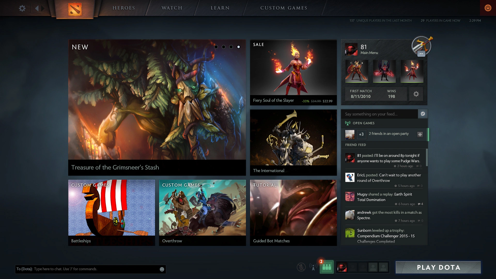

Dota 2, uno de los juegos más populares en el género de Arena de Batalla en Línea Multijugador (MOBA), ha sufrido cambios significativos desde su lanzamiento por Valve Corporation en 2013. Como continuación del popular mod Defense of the Ancients (Dota) para Warcraft III, Dota 2 no solo mejoró las mecánicas del juego, sino que también mejoró continuamente los gráficos y la interfaz de usuario para elevar la experiencia del jugador. Este artículo explora las etapas clave en la evolución de los gráficos e interfaz de Dota 2. Los primeros años del desarrollo de Dota 2, desde la fase beta hasta el lanzamiento oficial, se caracterizaron por mejoras significativas en los gráficos e interfaz en comparación con el mod original de Dota
Durante la fase beta (2011-2013), los gráficos de Dota 2 representaron un avance significativo en comparación con el mod original de Dota. El juego utilizó el motor Source, brindando modelos de personajes de alta calidad, texturas detalladas y efectos visuales mejorados. La interfaz de usuario era simple pero efectiva, permitiendo a los nuevos jugadores navegar rápidamente por el juego
Con el lanzamiento oficial en 2013, Dota 2 recibió nuevas mejoras visuales y una interfaz actualizada. Los desarrolladores se centraron en detallar los personajes y entornos del juego, creando una experiencia más inmersiva. La interfaz se actualizó para mayor comodidad e información, incluyendo un menú de selección de héroes mejorado y un sistema de ayuda actualizado.

Durante este período, Dota 2 experimentó numerosas actualizaciones, mejorando significativamente gráficos e interfaz, incluyendo la implementación del motor Source 2 y la actualización Dota 2 Reborn.
Parches y Actualizaciones
De 2014 a 2016, Dota 2 recibió numerosos parches y actualizaciones que mejoraron los gráficos y la interfaz. Los desarrolladores añadieron nuevas animaciones y efectos, haciendo el combate más dinámico y visualmente atractivo. Una innovación importante fue el sistema "Reborn", que utilizó el motor Source 2. Esta actualización trajo mejoras significativas en rendimiento, detalle y capacidades de personalización de la interfaz.
En 2015, Valve lanzó la importante actualización Dota 2 Reborn, haciendo la transición al motor Source 2. Esta actualización no solo mejoró los gráficos, sino que también actualizó significativamente la interfaz. Se introdujeron una nueva pantalla principal, un menú de selección de héroes mejorado y nuevas herramientas de creación de contenido, permitiendo a la comunidad crear mods y mapas personalizados.
Dota 2 Reborn se convirtió en un hito clave en el desarrollo del juego, sentando las bases para futuras innovaciones y mejoras. Esta actualización no solo mejoró los aspectos técnicos del juego, sino que también expandió sus capacidades, haciendo que Dota 2 sea aún más atractivo y diverso para los jugadores.
Desde 2017, Dota 2 ha seguido recibiendo actualizaciones regulares, incluyendo mejoras gráficas, optimización de rendimiento y cambios innovadores en la interfaz, asegurando una experiencia de juego moderna.
Mejoras Constantes
Desde 2017, Dota 2 ha seguido recibiendo actualizaciones regulares, incluyendo mejoras gráficas y actualizaciones de interfaz. Los desarrolladores están trabajando en optimizar el juego para diversas plataformas, añadiendo soporte para altas resoluciones y nuevos efectos gráficos. La interfaz de usuario se mejora constantemente en base a los comentarios de los jugadores, haciendo el juego aún más conveniente e intuitivo.
Pase de Batalla y Eventos
Un elemento importante del Dota 2 moderno ha sido el Pase de Batalla y varios eventos como Crownfall. Estas actualizaciones traen no solo nuevos artículos cosméticos y modos de juego, sino también efectos visuales y temas únicos, añadiendo variedad al juego y atrayendo nuevos jugadores.
Nuevos Efectos Visuales
Uno de los aspectos importantes de las actualizaciones es la introducción de nuevos efectos visuales, haciendo el juego aún más espectacular. Por ejemplo, nuevos efectos de hechizos y habilidades de héroes añaden dinamismo y atractivo al juego. Los desarrolladores también se centran en actualizar el paisaje del mapa, añadiendo nuevos detalles y mejorando los elementos existentes para hacerlo más realista y estéticamente atractivo. Dota 2 recibe actualizaciones regulares de texturas, haciendo que los objetos y personajes sean más detallados y realistas. Esto contribuye a una inmersión más profunda en el juego y aumenta la calidad general de los gráficos. Los jugadores tienen más opciones de personalización para la interfaz según sus necesidades. Esto incluye la capacidad de cambiar la ubicación de elementos, personalizar las teclas rápidas y usar nuevas funciones que mejoran la experiencia de juego en general.
El primer escenario del Dota fue creado por los propios usuarios del juego, entre ellos EUL , quien lanzo el DOTA by EUL en el año 2003, inspirado en AEON STRIPE de 1999.
Con la salida de la expansión del War Craft lll, varios usuarios se dedicaron en el trabajo de las futuras actualizaciones del dota.
Es por ello que el mapa del dota, no es ajeno de las constantes actualizaciones y cambios a lo largo del tiempo. Tan solo en el dota clásico, el mapa ha sufrido leves modificaciones desde su primera versión en el año 2003. Pero es en el lanzamiento del dota 2, donde el mapa se actualizó notablemente.
Historiadeldota. Escenarios del Dota. Historia deldota . [en línea]. 2021. Disponible en : https://historiadeldota.blogspot.com/2021/04/escenarios-del-dota.html?m=1 . [Consulta: 13 diciembre 2024].
BO3.gg. The evolution of Dota 2’s graphics and UI over the years. BO3.gg. [en línea]. 2024. Disponible en: https://bo3.gg/es/dota2/articles/the-evolution-of-dota-2-s-graphics-and-ui-over-the-years. [Consulta: 13 diciembre 2024].